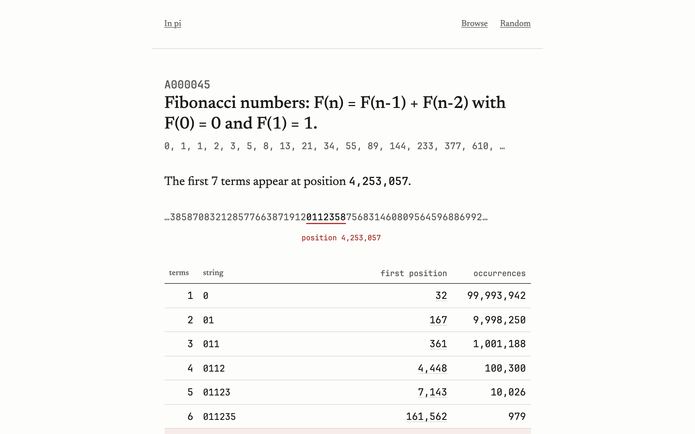

Type an OEIS A-number, a sequence name, a few terms, or a string of digits, and the site tells you how far into pi you have to go before the first \(k\) terms appear, for every \(k\) it can manage. Position 1 is the first digit after the decimal point, so the leading 3 is never searched. Terms are concatenated exactly as the OEIS lists them, leading zeros included, and minus signs are dropped. The search covers the first 1,000,000,000 digits and strings up to 12 digits long. For the Fibonacci numbers that means the 8th term, 13, pushes the string to 9 digits and the 10th term, 34, takes it past 12, so the staircase has nine rows.
A billion digits in a Worker
The site runs on a Cloudflare Worker, which has no disk and a memory limit far below the size of the digits. A billion digits packed two per byte is 500 MB. So the index lives in R2 and every query is a handful of byte-range reads against it, with no database anywhere near the digits.
For strings of 1 to 8 digits I use direct-address tables. Table \(k\) has \(10^k\) entries of 8 bytes, a first position and a count, indexed by the query read as a number. A query for 31415 is one 8-byte read from table5 at offset \(8 \times 31415\). Table8 is 800 MB and all eight tables together are about 889 MB, a lot of storage for a lookup that costs one read.
For 9 to 12 digits I use buckets keyed by the 8-digit prefix. Every one of the billion positions that starts a full 8-digit string gets a 6-byte entry, a 32-bit position and a 16-bit code for the four digits that follow, and the entries are grouped by prefix in position order. A 400 MB offsets file says where each group starts. That's about 6 GB of buckets. A 12-digit query reads the prefix's table8 entry and its offset in parallel, then reads the group, which averages ten entries or 60 bytes since each 8-digit prefix shows up about ten times in a billion digits, and filters on the next-digit code. The code also records how many digits were actually available, because the last few positions in the file have fewer than four digits after them, and a query for a string that ends at the very end of the expansion still has to be found.
Positions are 32-bit, so the format tops out around 4.29 billion digits. Every file is split into 240 MiB shards named table8.bin.000, table8.bin.001 and so on, because that was what the upload tooling would take, and a read that crosses a shard boundary becomes two reads. The whole index is about 7.8 GB in R2.
One format, two readers
The index is built once by a Rust tool that memory-maps the packed digits and builds the eight tables in parallel with a rolling value modulo \(10^{k-1}\). The same crate has a reference reader, and the Worker has a TypeScript reader that does the same steps with R2 range gets. Both read a committed fixture, the first 20,000 digits with tables up to 3 digits and a 3-digit bucket prefix, so the fixture exercises every code path in a few kilobytes. Both are checked against a naive scan over random needles at every query length.
The digits came from the MIT SIPB mirror of a billion-digit file. I spot-checked stretches of them against pi.delivery, and the manifest records the SHA-256 of the packed file.
Sequences, and a database that blocks
The sequence data is a different problem. Every OEIS sequence gets its staircase computed offline against the index, along with a few derived columns for the leaderboards, and the results go into D1, Cloudflare's SQLite. Sequence names are searched with an FTS5 prefix query and ordered by A-number rather than by relevance, because the classic sequences were cataloged first, and for this corpus that beats relevance.
On the first of every month at 06:17 UTC a workflow downloads the current OEIS dumps, downloads the index from R2, recomputes every staircase, and writes SQL. D1 blocks every read on a database while it imports, and the import takes long enough to matter. So there are two databases, and a KV key named live-db names which one serves traffic. The import goes into the other one in chunks of 1,000 statements, each chunk a transaction retried up to three times, and only after the standby has at least 1,000 rows does the workflow flip the key. The Worker caches the pointer for a minute per isolate, so a flip takes effect within about a minute.
The site doesn't show the expected count under the null hypothesis that pi's digits are random, and it should. A 12-digit string has \(10^{12}\) possibilities and there are only a billion positions, so the expected number of occurrences is 0.001, and most 12-digit strings are simply absent. A 9-digit string is expected about once. The table shows the observed count next to each row, and without the expected number beside it a reader can't tell a coincidence from a curiosity. "Not within 1,000,000,000" is also a statement about this file rather than about pi.
Sequence data comes from the OEIS under CC BY-SA 4.0. The site isn't affiliated with the OEIS Foundation.